概要
このセクションでは、Windows 用 StageNow のインストール、アンインストール、およびアップグレードの手順について説明します。
要件
- Microsoft Windows 7、10、または 11 を搭載した PC (英語、中国語、日本語)
- 2GB 以上の RAM
- 6GB 利用可能なストレージ (.NET Framework がまだインストールされていない場合)
- StageNow インストーラ (StageNow ダウンロード ページを参照)
- Microsoft .NET Framework 4.5 以降 (StageNow インストーラに付属)
- Windows 用 Java は Java ダウンロード ページから入手できます。
- サポートされている Web ブラウザ:
- Firefox 29 以降
- Google Chrome 35 以降
- Internet Explorer 9 以降
- PDF リーダー (ステージング バーコードの表示および印刷用。StageNow インストーラに含まれています)
Wi-Fi ホットスポット ステージングはサポートされなくなりました。
StageNow のインストール
StageNow デスクトップ ツールをインストールすると、Microsoft .NET Framework (未インストールの場合) に加え、関連するステージング データベースおよびサーバー コンポーネントも PC にインストールされます。また、必要に応じて Adobe Acrobat Reader をダウンロードできます。
既存のインストールをアップグレードする場合は、本ガイド後半の「StageNow のアップグレード」を参照してください。
StageNow をインストールするには:
StageNow ダウンロード ページにアクセスし、インストーラのダウンロード手順に従います。
ダウンロード後、セットアップ パッケージ ファイルへ移動し、ダブルクリックします。
Microsoft .NET Framework をインストールすることを許可します (未インストールの場合)。
[インストール] を選択します。Framework のインストールが完了すると、StageNow のインストールの準備中であることを示すウィンドウがに表示されます。
[次へ] をクリックして続行します。
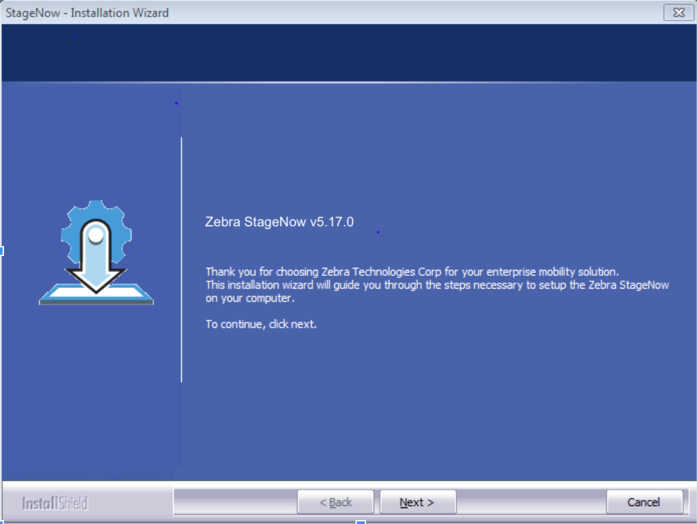
画像をクリックすると拡大表示され、ESC キーを押すと終了します。使用許諾契約の条項に同意し、再度 [次へ] をクリックします。
ユーザー名および会社名を入力します。
[次へ] をクリックして続行します。
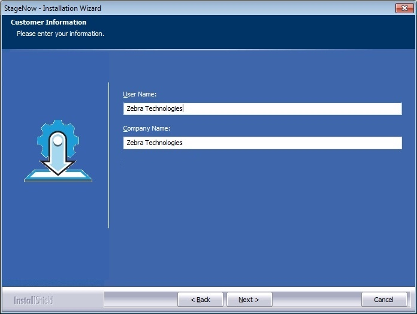
画像をクリックすると拡大表示され、ESC キーを押すと終了します。StageNow Workstation ツールへのアクセスを保護するためのパスワードを入力します。
管理者パスワードの規則
- パスワードは 4 ～ 10 文字で入力する必要があります。
- 使用できる文字は英数字および次の特殊文字のみです。 - = ! @ $ ^ ( ) { } [ ] ; , ~ `
- パスワードでは大文字と小文字が区別されます。
警告: いったんパスワードを設定すると、StageNow の機能、保存されたプロファイル、およびその他の保管データにアクセスできる唯一の手段は管理者パスワードとなります。パスワードを紛失したりまたは忘れたりした場合、StageNow をアンインストールして再インストールする方法でしかパスワードをリセットできません。その結果、保管されているデータと設定がすべて失われます。管理者パスワードの変更方法も参照してください。
パスワードを入力し、[次へ] をクリックして続行します。
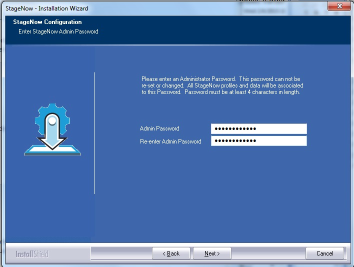
画像をクリックすると拡大表示され、ESC キーを押すと終了します。10.[次へ] をクリックして既定のフォルダを使用するか、[参照] をクリックして別のフォルダを選択します。
警告!! インストール時に [参照] を選択する場合:
• Zebra では、StageNow 専用の新しいフォルダを作成することを強く推奨しています。これにより、後で StageNow をアンインストールした場合のデータ損失を防ぐことができます。
• 新しいインストール フォルダ内に、すべてのプログラム ファイルを格納するための Staging_solution フォルダが作成されます。
• インストール中に作成された StageNow フォルダの名前は変更しないでください。
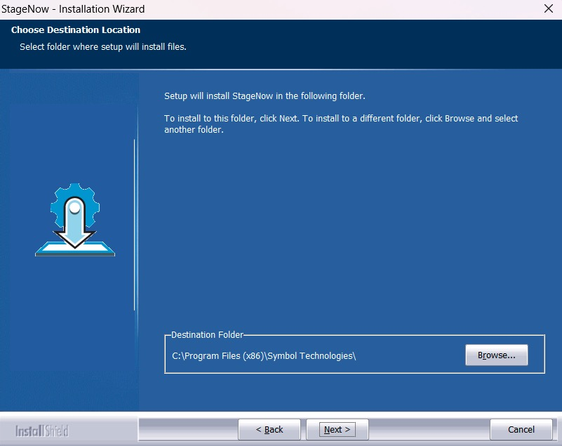
画像をクリックすると拡大表示され、ESC キーを押すと終了します。11.インストール フォルダを選択すると、確認画面が表示されます。
[次へ] をクリックして確定し、続行します。
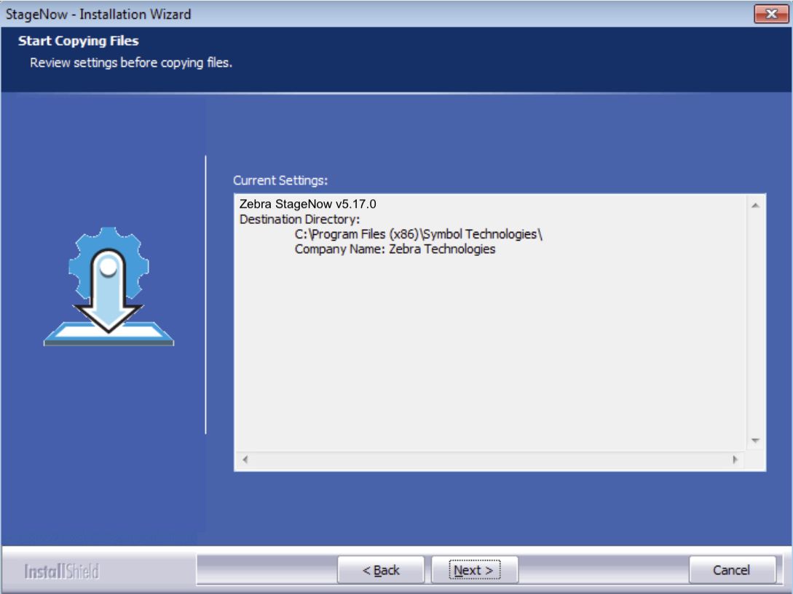
画像をクリックすると拡大表示され、ESC キーを押すと終了します。12.必要に応じて選択し、[次へ] をクリックして続行します。
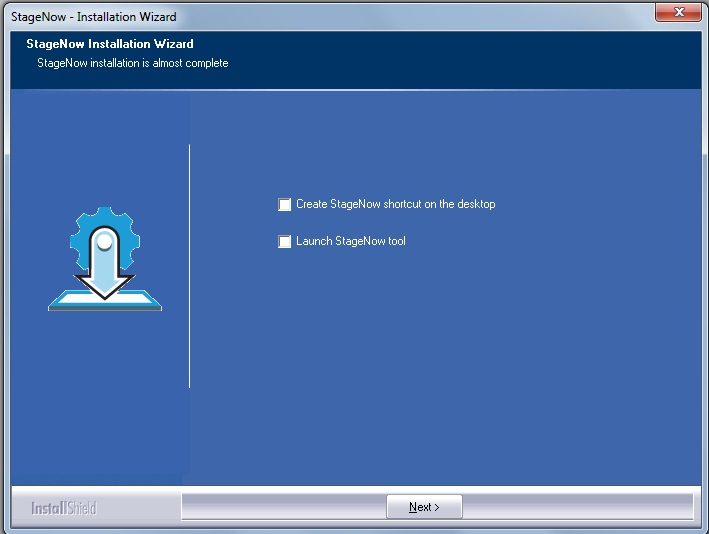
画像をクリックすると拡大表示され、ESC キーを押すと終了します。13.ステージング マテリアルの表示および配布には、.pdf リーダー (Adobe Acrobat など) が必要です。
目的のオプションを選択し、[完了] をクリックします。
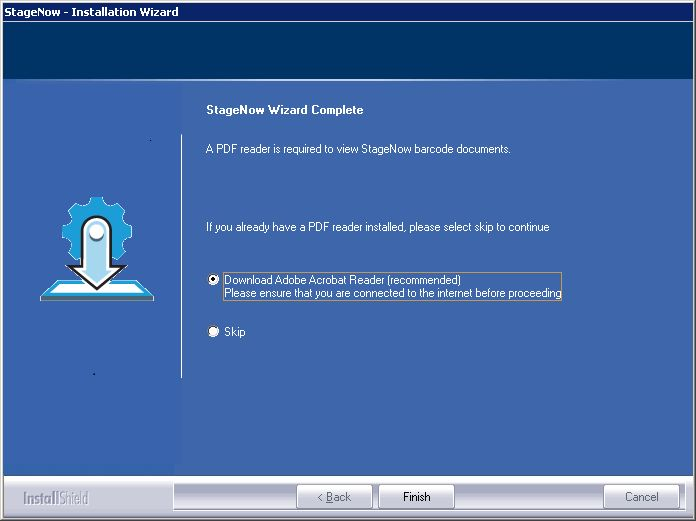
画像をクリックすると拡大表示され、ESC キーを押すと終了します。StageNow を使用する準備が整いました。次の手順については、「ご使用の前に」ガイドを参照してください。
StageNow のアップグレード
ホスト PC に古いバージョン StageNow Workstation ツールが存在する場合は、アップグレードすることが可能です。
重要: アップグレードする前に、ホスト PC 上にある作業途中のプロファイルをすべて完了してください。これを怠ると、予期しない動作や望ましくない動作が発生する可能性があります。
StageNow Workstation ツールをアップグレードする方法:
staging_solution.[Version Number].exeセットアップ パッケージをダウンロードします。セットアップ パッケージ ファイルをダブルクリックします。InstallShield で既存のバージョンが検出され、次のメッセージが表示されます。
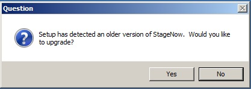
アップグレードを続行する場合は [はい]、既存のバージョンを保持してアップグレードを中止する場合は [いいえ] を選択します。[はい] を選択すると、既存の StageNow データ (設定やプロファイルなど) を保持するか破棄するかを確認するメッセージが表示されます。
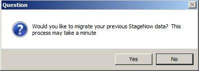
目的のオプションを選択して、アップグレードを続行します。注: 既存のデータを保持することを選択した場合、既存のパスワードが保持されるため、インストール プロセスで管理者パスワードが要求されません。
残りのインストール手順については、「StageNow のインストール」を参照してください。
StageNow のアンインストール
StageNow Workstation ツールをアンインストールする方法:
開始する前に、StageNow アプリを終了し、開いているすべての StageNow ウィンドウおよびフォルダを閉じます。
Windows のコントロール パネルで、[プログラム] > [プログラムと機能] を選択します。インストールされているアプリのリストが表示されます。
リストを下にスクロールし、[StageNow] を右クリックして、ドロップダウンから [アンインストール] を選択します。インストール ウィザードが表示されます。
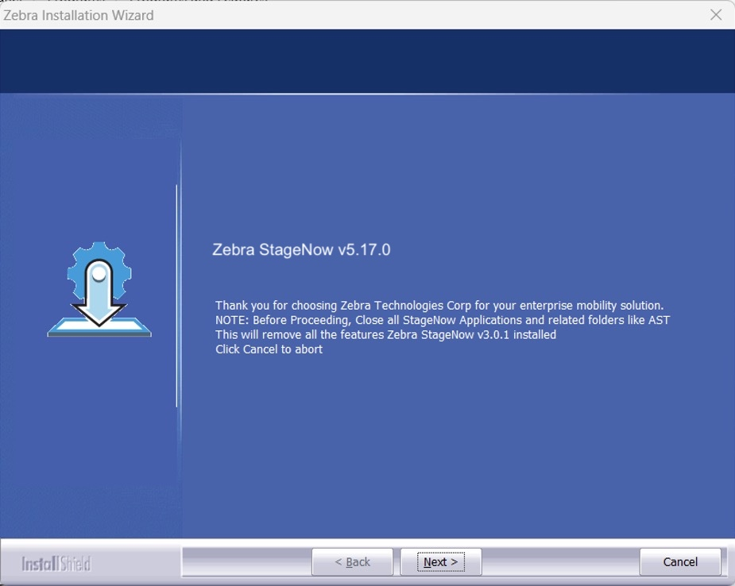
画像をクリックすると拡大表示され、ESC キーを押すと終了します。[次へ] をクリックして、StageNow ファイルの削除を開始します。しばらくすると、下図のようなダイアログが表示されます。
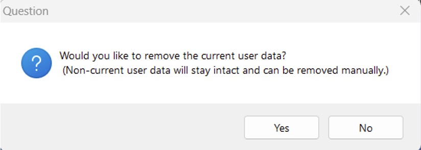
画像をクリックすると拡大表示され、ESC キーを押すと終了します。今後 StageNow で使用するために既存の StageNow データを保持するには、[いいえ] をクリックします。
アンインストールは完了です (手順 5 および 6 をスキップしてください) 。現在の Windows ユーザーのユーザー データを削除するには、[はい] をクリックします。このアクションは元に戻せません。
StageNow を複数の Windows プロファイルで使用していた場合は、手順 6 に進みます。それ以外の場合は、アンインストールは完了です。[はい] ボタンをクリックした後に残っているデータを削除するには:
a. ファイル エクスプローラー ウィンドウを開き、アドレス バーにC:\Users\[username]\AppData\Roamingと入力します。
b. 「StageNow」フォルダが存在する場合は削除します。
c. 現在の Windows ユーザーからログオフし、別のユーザーとしてログインします。
d. すべてのユーザーのデータが削除されるまで、手順 a、b、c を繰り返します。
オンデバイス ステージング ソフトウェア
StageNow オンデバイス クライアント ソフトウェアは、Android KitKat 以降が動作するすべての Zebra デバイスをサポートしています。これらのデバイスは通常、StageNow クライアントがプレインストールされた状態で出荷されており、すべての StageNow デバイス構成オプションをサポートします。
以下の方法をご確認ください。